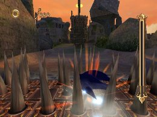
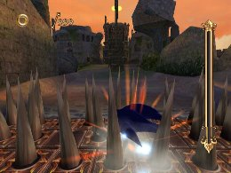

特殊なスキルの解説
上級者編
ひみリンでは、たくさんのスキルが存在しますが、その中でも特殊な使用方法や特殊な効果があるスキルの解説と他のスキルと組み合わせる事でさらに効果が期待できるものを紹介します。
「イージススライダー」
スライディング中に防御力を得るスキルで、ダメージ系のトラップを回避できる唯一のスキルです。
トゲパネルやファイヤーポッドはもちろん、鉄球に当たってもダメージを受けない優れものです。
スライディング中にしか効果が無い為、下記に紹介するスライディング系のスキルと組み合わせるとさらに効果が期待できます。
便利なスキルではありますが、スライディング終了時の完全停止状態ではダメージを受けてしまうので、注意が必要です。
 

「スプラッシュジャンプ」
ジャンプ中に障害物に当たる事で、さらに高いジャンプを期待出来るスキルで、感覚としては２段ジャンプに近いイメージになります。
覚えるレベルが高く、スキル消費ポイントも高めではありますが、その分様々な場面での使用が期待出来るので、ポイントを消費する価値はあるでしょう。
ショートジャンプからでも発動するので、意識しなくてもそれなりに発動するケースはありますが、高いところへ登るときや、マジンを利用しないと越えられなかった壁などを越えられるようになるなど、意識して使い始めると、新しいコース攻略が発見できるかもしれません。
ただし、特定のマジンを倒して壊れるエネミーコンテナでは「スプラッシュジャンプ」できないので、注意が必要です。


「リングエクスチェンジ」
リングを獲得することで、ソウルゲージが上昇するようになるスキルで、「スピードブレイク」や「タイムブレイク」をたくさん使用したい人には便利なスキルといえます。
パールはもちろんのこと、リングも大量に設置されているミッションでは、「スピードブレイク」や「タイムブレイク」を長時間持続させることも可能です。
ただ、リングを獲得してもリング所持数は増えない為、ダメージを受けるとミスしやすくなってしまいます。
また、「リング○○枚集めろ」のミッションは、リングを取得しても所持数が増えない関係で、クリア自体が出来なくなってしまう事やナイトパレスのロングステージの途中で毒性の霧によってダメージを受けてしまうところもクリア出来なくなってしまうのでので、スキルを外してから挑戦しましょう。
逆にこの特性を利用して、「リングを０枚でクリアしろ」のミッションでは、リングを気にせずに走り抜けられるので、どうしてもクリアが出来ない人はスキルを装備していくとクリアが楽になるでしょう。
「スロードサーチ」
一見、スキルを装備しても何も変わっていないように感じられるのは、このスキル装備中だけロックオンできるものが意外と少ないためで、使用機会が少ないスキルです。
しかし、イフリートゴーレムのガスタンクにホーミングアタックをかけられるようになり、ガスタンクを弾き返してダメージを与える事が可能になります。
また、レビテイテッドルーインの強風で飛んでくる柱やナイトバレスの再生する柱にもホーミングアタックをかけられるので、チャンスがあればホーミングアタックをするのも良いかと思います。
特にナイトパレスの柱を利用しないとファイヤーソウルが取れない箇所がありますので、ファイヤーソウルねらいの場合は装備しておくと良いでしょう。
スキルポイントの消費が少ないのも魅力なので、タイムブレイク重視のプレイでは装備してみましょう。


■スキルコンボについて
特殊なスキルを絡めたオススメの組み合わせは以下の通りです。
他にも自分のプレイスタイルに合わせた組み合わせを考えてみると面白いでしょう。
「リングオブゼロ」＋「リングエクスチェンジ」＋経験値系スキル
リングエクスチェンジの効果により、リングを獲得してもリングが増えない為、リンオブゼロの効果が維持しやすい状態になります。
リングオブゼロの効果は経験値系スキルの効果を高めてくれるので、自分の獲得しやすい経験値系スキルを装備すると大量の経験値獲得が見込めるでしょう。
ただし、リングを獲得出来ない状態ですので、ダメージを受けるとミスになってしまう点は注意が必要です。また、「リングボーナス」を装備してしまうとリングを獲得した状態でスタートしてしまうので、出来れば外しておいた方が良いでしょう。


「スキマー」系＋「クイックスライド」系＋「イージススライダー」or「ボルカノンスライダー」
様々な場面で役に立つイージススライダーとボルカノンスライダー。
強力なスキルではありますが、スライディング中にしか効果が得られない為、使いどころが難しいと感じます。
スキルの効果を少しでも長く使用したいと考える人には「スキマー」系スキルと組み合わせ、「クイックスライド」系スキルを使用する事で、左右の移動が快適になるでしょう。
応用編、キャンセルの活用で説明したスライディングキャンセルを使いこなせば、嫌なトラップも
楽々と回避することが可能です。
「サブCディバウアー」＋「ソウルバリア」
獲得したリングを「サブCディバウアー」で消費する事で、「ソウルバリア」の効果によってソウルゲージを増やす組み合わせになります。
ミッション中にたくさんのリングが無いと厳しいですが、少しでもソウルゲージを溜めたい人には
有効な組み合わせといえるでしょう。

スーパープレイ
レビテイテッドルーイン
ゴー フォー ザ ゴール シンドバッドを探しだせ！
スピードブレイクを使える場面が多いので、「リングエクスチェンジ」でソウルゲージを上昇させて、高速移動のため目前に出現する敵は「スキマー」系＋「クイックスライド」系＋「ボルカノンスライダー」で対処します。
【装備スキル一覧】
チャージャー オールラウンダー クイックハイステップ クイックエア ワープブースト ハイパースピードアップ ランディングブースト ファイヤータックル キャンセルブースト ファイヤーゲイズ ロケットジャンプ Ｈメガエキスパンズ ホーミングバランス エキスパートアタック クイックジャンプ ボルカノンスライダー クイックハイスライド ハイパースキマー スロードサーチ ハイパーサージ ハードブレーキ バックステップ ファイヤーステップ Ｈパールコレクター リングボーナス ワープダッシュ リングエクスチェンジ チェインボーナス マッハグラインド クレストオブウィンド
« 壁歩き攻略 | 上級者編 | 金メダルへの道 その１ »
 RSS
RSS